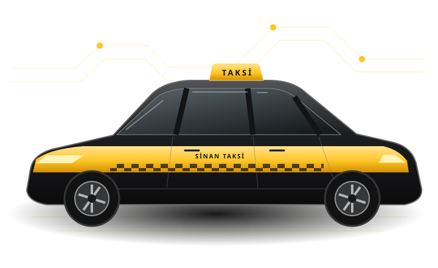

01 / ŞEHİR İÇİ
Taksi
Mahallenizden istasyona, otelden iş adresine veya bir ilçeden diğerine tek yönlü yolculuklar.
İlçenizi seçin ↗İstanbul · Avrupa ve Anadolu
İstanbul’un 39 ilçesinde taksi ve şoförlü araç kiralama. İlçenizi seçin, yolculuğunuzu planlayın.

Hizmetler
01 / ŞEHİR İÇİ
Mahallenizden istasyona, otelden iş adresine veya bir ilçeden diğerine tek yönlü yolculuklar.
İlçenizi seçin ↗02 / PLANLI ULAŞIM
Toplantılar, havalimanı transferleri ve birden fazla durağı olan programlar için şoförlü ulaşım.
Rotanızı hazırlayın ↗İstanbul ilçe rehberi
Aramanıza uygun ilçe bulunamadı.
Yolculuk planlayıcı
Başlangıç ve varış noktalarını girin. Rotayı haritada açın veya yolculuk özetini paylaşmak için kopyalayın.